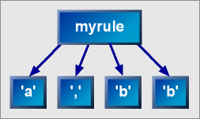
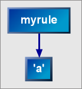
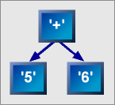
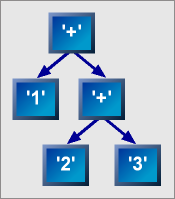

|
|
Trees |
 |
 |
 |
Parse trees are an in-memory representation of the input with a structure that conforms to the grammar.
The advantages of using parse trees instead of semantic actions:
Example
Now that you think you may want to use trees, I'll give an example of how to use them and you can see how easy they are to use. So, following with tradition (and the rest of the documentation) we'll do a calculator. Here's the grammar:
integer
= token_node_d[ (!ch_p('-') >> +digit_p) ]
;
factor
= integer
| '(' >> expression >> ')'
| ('-' >> factor)
;
term
= factor
>> *( ('*' >> factor)
| ('/' >> factor)
)
;
expression
= term
>> *( ('+' >> term)
| ('-' >> term)
)
;
Now, you'll notice the only thing different in this grammar is the token_node_d directive. This causes the match of the integer rule to end up in one node. Without token_node_d, each character would get it's own node. Further note that token_node_d is an implicit lexeme (that means no lexeme_d is needed to switch to character level parsing). As you'll soon see, it's easier to convert the input into an int when all the characters are in one node. Here is how the parse is done to create a tree:
tree_parse_info<> info = pt_parse(first, expression);
pt_parse() is similar to parse(). There are four overloads: two for pairs of first and last iterators and two for character strings. Two of the functions take a skipper parser and the other two do not.
The tree_parse_info struct contains the same information as a parse_info struct as well as one extra data member called trees. When the parse finishes, trees will contain the parse tree.
Here is how you can use the tree to evaluate the input:
if (info.full)
{
cout << "parsing succeeded\n";
cout << "result = " << evaluate(info) << "\n\n";
}
Now you ask, where did evaluate() come from? Is it part of spirit? Unfortunately, no, evaluate() is only a part of the sample. Here it is:
long evaluate(const tree_parse_info<>& info)
{
return eval_expression(info.trees.begin());
}
So here you see evaluate() simply calls eval_expression() passing the begin() iterator of info.trees. Now here's the rest of the example:
// Here's some typedefs to simplify things
typedef char const* iterator_t;
typedef tree_match<iterator_t> parse_tree_match_t;
typedef parse_tree_match_t::const_tree_iterator iter_t;
// Here's the function prototypes that we'll use. One function for each
// grammar rule.
long evaluate(const tree_parse_info<>& info);
long eval_expression(iter_t const& i);
long eval_term(iter_t const& i);
long eval_factor(iter_t const& i);
long eval_integer(iter_t const& i);
// i should be pointing to a node created by the expression rule
long eval_expression(iter_t const& i)
{
// first child points to a term, so call eval_term on it
iter_t chi = i->children.begin();
long lhs = eval_term(chi);
for (++chi; chi != i->children.end(); ++chi)
{
// next node points to the operator. The text of the operator is
// stored in value (a vector<char>)
char op = *(chi->value.begin());
++chi;
long rhs = eval_term(chi);
if (op == '+')
lhs += rhs;
else if (op == '-')
lhs -= rhs;
else
assert(0);
}
return lhs;
}
long eval_term(iter_t const& i)
{
// ... see parse_tree_calc1.cpp for complete example
// (it's rather similar to eval_expression() ) ...
}
long eval_factor(iter_t const& i)
{
// ... again, see parse_tree_calc1.cpp if you want all the details ...
}
long eval_integer(iter_t const& i)
{
// use the range constructor for a string
string integer(i->value.begin(), i->value.end());
// convert the string to an integer
return strtol(integer.c_str(), 0, 10);
}
 The full source code can be viewed here. This is part of the Spirit distribution.
The full source code can be viewed here. This is part of the Spirit distribution.
So, you like what you see, but maybe you think that the parse tree is too hard to process? With a few more directives you can generate an abstract syntax tree (ast) and cut the amount of evaluation code by at least 50%. So without any delay, here's the ast calculator grammar:
integer
= leaf_node_d[ (!ch_p('-') >> +digit_p) ]
;
factor
= integer
| inner_node_d[ch_p('(') >> expression >> ch_p(')')]
| (root_node_d[ch_p('-')] >> factor)
;
term
= factor
>> *( (root_node_d[ch_p('*')] >> factor)
| (root_node_d[ch_p('/')] >> factor)
)
;
expression
= term
>> *( (root_node_d[ch_p('+')] >> term)
| (root_node_d[ch_p('-')] >> term)
)
;
The differences from the parse tree grammar are hi-lighted in bold-red. The inner_node_d directive causes the first and last nodes generated by the enclosed parser to be discarded, since we don't really care about the parentheses when evaluating the expression. The root_node_d directive is the key to ast generation. A node that is generated by the parser inside of root_node_d is marked as a root node. When a root node is created, it becomes a root or parent node of the other nodes generated by the same rule.
To start the parse and generate the ast, you must use the ast_parse functions, which are similar to the pt_parse functions.
tree_parse_info<> info = ast_parse(first, expression);
Here is the eval_expression function (note that to process the ast we only need one function instead of four):
long eval_expression(iter_t const& i)
{
if (i->value.id() == parser_id(&integer))
{
// convert string to integer
string integer(i->value.begin(), i->value.end());
return strtol(integer.c_str(), 0, 10);
}
else if (i->value.id() == parser_id(&factor))
{
// factor can only be unary minus
return - eval_expression(i->children.begin());
}
else if (i->value.id() == parser_id(&term))
{
if (*i->value.begin() == '*')
{
return eval_expression(i->children.begin()) *
eval_expression(i->children.begin()+1);
}
else if (*i->value.begin() == '/')
{
return eval_expression(i->children.begin()) /
eval_expression(i->children.begin()+1);
}
}
else if (i->value.id() == parser_id(&expression))
{
if (*i->value.begin() == '+')
{
return eval_expression(i->children.begin()) +
eval_expression(i->children.begin()+1);
}
else if (*i->value.begin() == '-')
{
return eval_expression(i->children.begin()) -
eval_expression(i->children.begin()+1);
}
}
return 0;
}
 An entire working example is ast_calc.cpp. Hopefully this example has been enough to whet your appetite for
trees. For more nitty-gritty details, keep on reading the rest of this chapter.
An entire working example is ast_calc.cpp. Hopefully this example has been enough to whet your appetite for
trees. For more nitty-gritty details, keep on reading the rest of this chapter.
To create a parse tree, you can call one of the five free functions:
template <typename FactoryT, typename IteratorT, typename ParserT, typename SkipT>
tree_parse_info<IteratorT, FactoryT>
pt_parse(
IteratorT const& first_,
IteratorT const& last_,
parser<ParserT> const& parser,
SkipT const& skip_, FactoryT const & factory_ = FactoryT());
template <typename IteratorT, typename ParserT, typename SkipT>
tree_parse_info<IteratorT>
pt_parse(
IteratorT const& first_,
IteratorT const& last_,
parser<ParserT> const& parser,
SkipT const& skip_);
template <typename IteratorT, typename ParserT>
tree_parse_info<IteratorT>
pt_parse(
IteratorT const& first_,
IteratorT const& last_,
parser<ParserT> const& parser);
template <typename CharT, typename ParserT, typename SkipT>
tree_parse_info<CharT const*>
pt_parse(
CharT const* str,
parser<ParserT> const& parser,
SkipT const& skip);
template <typename CharT, typename ParserT>
tree_parse_info<CharT const*>
pt_parse(
CharT const* str,
parser<ParserT> const& parser);
To create an abstract syntax tree (ast for short) you call one of the five free functions:
template <typename FactoryT, typename IteratorT, typename ParserT, typename SkipT>
tree_parse_info<IteratorT, FactoryT>
ast_parse(
IteratorT const& first_,
IteratorT const& last_,
parser<ParserT> const& parser,
SkipT const& skip_, FactoryT const & factory_ = FactoryT());
template <typename IteratorT, typename ParserT, typename SkipT>
tree_parse_info<IteratorT>
ast_parse(
IteratorT const& first_,
IteratorT const& last_,
parser<ParserT> const& parser,
SkipT const& skip_);
template <typename IteratorT, typename ParserT>
tree_parse_info<IteratorT>
ast_parse(
IteratorT const& first_,
IteratorT const& last,
parser<ParserT> const& parser);
template <typename CharT, typename ParserT, typename SkipT>
tree_parse_info<CharT const*>
ast_parse(
CharT const* str,
parser<ParserT> const& parser,
SkipT const& skip);
template <typename CharT, typename ParserT>
tree_parse_info<CharT const*>
ast_parse(
CharT const* str,
parser<ParserT> const& parser);
The tree_parse_info struct returned from pt_parse and ast_parse contains information about the parse:
template <typename IteratorT = char const*>
struct tree_parse_info
{
IteratorT stop;
bool match;
bool full;
std::size_t length;
typename tree_match<IteratorT>::container_t trees;
};
| tree_parse_info | |||||||||
| stop | points to the final parse position (i.e. parsing processed the input up to this point). | ||||||||
| match | true if parsing is successful. This may be full (the parser consumed all the input), or partial (the parser consumed only a portion of the input.) | ||||||||
| full | true when we have a full match (when the parser consumed all the input). | ||||||||
| length | The number of characters consumed by the parser. This is valid only if we have a successful match (either partial or full). | ||||||||
| trees | Contains the root node(s) of the tree. | ||||||||
When Spirit is generating a tree, the parser's parse() member function will return a tree_match object, instead of a match object. tree_match has three template parameters. The first is the Iterator type which defaults to char const*. The second is the node factory, which defaults to node_val_data_factory. The third is the attribute type stored in the match. A tree_match has a member variable which is a container (a std::vector) of tree_node objects named trees. For efficiency reasons, when a tree_match is copied, the trees are not copied, they are moved to the new object, and the source object is left with an empty tree container. tree_match supports the same interface as the match class: it has an operator bool() so you can test it for a sucessful match: if (matched), and you can query the match length via the length() function. The class has this interface:
template <typename IteratorT = char const*, typename NodeFactoryT = node_val_data_factory<> >
struct tree_match
{
typedef typename NodeFactoryT::template factory<IteratorT> node_factory_t;
typedef typename node_factory_t::node_t parse_node_t;
typedef tree_node<parse_node_t> node_t;
typedef typename node_t::children_t container_t;
typedef typename container_t::iterator tree_iterator;
typedef typename container_t::const_iterator const_tree_iterator;
tree_match();
tree_match(std::size_t length, parse_node_t const& n);
tree_match(tree_match const& x);
explicit tree_match(match const& x);
tree_match& operator=(tree_match const& x);
void swap(tree_match& x);
operator bool() const;
int length() const;
container_t trees;
};
When a parse has sucessfully completed, the trees data member will contain the root node of the tree.
You may wonder, why is it a vector then? The answer is that it is partly for implementation purposes, and also if you do not use any rules in your grammar, then trees will contain a sequence of nodes that will not have any children. |
Having spirit create a tree is similar to how a normal parse is done:
tree_match<> hit = expression.parse(tree_scanner);
if (hit)
process_tree_root(hit.trees[0]); // do something with the tree
Once you have created a tree by calling pt_parse or ast_parse, you have a tree_parse_info which contains the root node of the tree, and now you need to do something with the tree. The data member trees of tree_parse_info is a std::vector<tree_node>. tree_node provides the tree structure. The class has one template parameter named T. tree_node contains an instance of type T. It also contains a std::vector<tree_node<T> > which are the node's children. The class looks like this:
template <typename T>
struct tree_node
{
typedef T parse_node_t;
typedef std::vector<tree_node<T> > children_t;
typedef typename children_t::iterator tree_iterator;
typedef typename children_t::const_iterator const_tree_iterator;
T value;
children_t children;
tree_node();
explicit tree_node(T const& v);
tree_node(T const& v, children_t const& c);
void swap(tree_node<T>& x);
};
This class is simply used to separate the tree framework from the data stored in the tree. It is a generic node and any type can be stored inside it and acessed via the data member value. The default type for T is node_val_data.
The node_val_data class contains the actual information about each node. This includes the text or token sequence that was parsed, an id that indicates which rule created the node, a boolean flag that indicates whether the node was marked as a root node, and an optional user-specified value. This is the interface:
template <typename IteratorT = char const*, typename ValueT = nil_t>
struct node_val_data
{
typedef typename std::iterator_traits<IteratorT>::value_type value_type;
typedef std::vector<value_type> container_t;
typedef typename container_t::iterator iterator_t;
typedef typename container_t::const_iterator const_iterator_t;
node_val_data();
node_val_data(IteratorT const& _first, IteratorT const& _last);
template <typename IteratorT2>
node_val_data(IteratorT2 const& _first, IteratorT2 const& _last);
void swap(node_val_data& x);
container_t::iterator begin();
container_t::const_iterator begin() const;
container_t::iterator end();
container_t::const_iterator end() const;
bool is_root() const;
void is_root(bool b);
parser_id id() const;
void id(parser_id r);
ValueT const& value() const;
void value(ValueT const& v);
};
If a node is generated by a rule, it will have an id set. Each rule has an id that it sets of all nodes generated by that rule. The id is of type parser_id. The default id of each rule is set to the address of that rule (converted to an integer). This is not always the most convenient, since the code that processes the tree may not have access to the rules, and may not be able to compare addresses. So, you can override the default id used by each rule by giving it a specific ID. Then, when processing the tree you can call node_val_data::id() to see which rule created that node.
The tree is organized by the rules. Each rule creates a new level in the tree. All parsers attached to a rule create a node when a sucessful match is made. These nodes become children of a node created by the rule. So, the following code:
rule_t myrule = ch_p('a') >> ',' >> *ch_p('b');
char const* input = "a,bb";
scanner_t scanner(input, input + strlen(input));
tree_match<> m = myrule.parse(scanner);
When executed, this code would return a tree_match, m. m.trees[0] would contain a tree like this:
|  |
The root node would not contain any text, and it's id would be set to the address of myrule. It would have four children. Each child's id would be set to the address of myrule, would contain the text as shown in the diagram, and would have no children.
When calling ast_parse, the tree gets generated differently. It mostly works the same as when generating a parse tree. The difference happens when a rule only generated one sub-node. Instead of creating a new level, ast_parse will not create a new level, it will just leave the existing node. So, this code:
rule_t myrule = ch_p('a');
char const* input = "a";
ast_scanner_t scanner(input, input+strlen(input));
tree_match<> m = myrule.parse(scanner);
will generate a single node that contains 'a'. If tree_match_policy had been used instead of ast_match_policy, the tree would have looked like this:
|  |
ast_match_policy has the effect of eliminating intermediate rule levels which are simply pass-through rules. This is not enough to generate abstract syntax trees, root_node_d is also needed. root_node_d will be explained later.
If you want to mix and match the parse tree and ast behaviors in your application, you can use the gen_pt_node_d[] and gen_ast_node_d[] directives. When parsing passes through the gen_pt_node_d directive, parse tree creation behavior is turned on. When the gen_ast_node_d directive is used, the enclosed parser will generate a tree using the ast behavior. Note that you must pay attention to how your rules are declared if you use a rule inside of these directives. The match policy of the scanner will have to correspond to the desired behavior. If you avoid rules and use primitive parsers or grammars, then you will not have problems.
There are a few more directives that can be used to control the generation
of trees. These directives only effect tree generation. Otherwise, they have
no effect.
This directive is similar to gen_pt_node_d and gen_ast_node_d, in that is modifies the scanner's match policy used by the enclosed parser. As it's name implies, it does no tree generation, it turns it off completely. This is useful if there are parts of your grammar which are not needed in the tree. For instance: keywords, operators (*, -, &&, etc.) By eliminating these from the tree, both memory usage and parsing time can be lowered. This directive has the same requirements with respect to rules as gen_pt_node_d and gen_ast_node_d do. See the example file xml_grammar.hpp (in libs/spirit/example/application/xml directory) for example usage of no_node_d[].
This directive has a similar purpose to no_node_d, but works differently. It does not switch the scanner's match policy, so the enclosed parser still generates nodes. The generated nodes are discarded and do not appear in the tree. Using discard_node_d is slower than no_node_d, but it does not suffer from the drawback of having to specify a different rule type for any rule inside it.
Both leaf_node_t and token_node_d work the same. They create a single node for the match generated by the enclosed parser. Unlike with earlier versions of Spirit, this directive is an implicit lexeme and alters the scanner (see Scanner Business).
This directive groups together all the nodes generated by the enclosed parser. For earlier versions of Spirit leaf_node_d and token_node_d were implemented this way. The new implementation of those directives is a lot faster, so reduced_node_d is primarily provided for portability and can be useful when using a custom node factory (see advanced tree generation, below).
This is useful for removing separators from lists. It discards all the nodes in even positions. Thus this rule:
rule_t intlist = infix_node_d[ integer >> *(',' >> integer) ];
would discard all the comma nodes and keep all the integer nodes.
This discards the first node generated.
This discards the last node generated.
This discards the first and last node generated.
The root_node_d directive is used to help out ast generation. It has no effect when generating a parse tree. When a parser is enclosed in root_node_d, the node it generates is marked as a root. This affects the way it is treated when it's added to the list of nodes being generated. Here's an example:
rule_t add = integer >> *(root_node_d[ ch_p('+') ] >> integer);
When parsing 5+6 the following tree will be generated:
|  |
When parsing 1+2+3 the following will be generated:
|  |
When a new node is created the following rules are used to determine how the tree will be generated:
Let a be the previously generated node.
Let b be the new node.
If b is a root node then
b's children become a + b's previous children.
a is the new first child of b.
else if a is a root node and b is not, then
b becomes the last child of a.
else
a and b become siblings.After parsing leaves the current rule, the root node flag on the top node is turned off. This means that the root_node_d directive only affects the current rule.
 The example ast_calc.cpp demonstrates the use of root_node_d and ast_parse. The full source code can be viewed here. This is part of the Spirit distribution.
The example ast_calc.cpp demonstrates the use of root_node_d and ast_parse. The full source code can be viewed here. This is part of the Spirit distribution.
The parse_tree_iterator class allows you to parse a tree using spirit. The class iterates over the tokens in the leaf nodes in the same order they were created. The parse_tree_iterator is templated on ParseTreeMatchT. It is constructed with a container of trees, and a position to start. Here is an example usage:
rule_t myrule = ch_p('a');
char const* input = "a";
// generate parse tree
tree_parse_info<> i = pt_parse(input, myrule);
typedef parse_tree_iterator<tree_match<> > parse_tree_iterator_t;
// create a first and last iterator to work off the tree
parse_tree_iterator_t first(i.trees, i.trees.begin());
parse_tree_iterator_t last;
// parse the tree
rule<parse_tree_iterator_t> tree_parser =...
tree_parser.parse(first, last);
The node_val_data can contain a value. By default it contains a void_t, which is an empty class. You can specify the type, using a template parameter, which will then be stored in every node. The type must be default constructible, and assignable. You can get and set the value using
ValueT node_val_data::value;
and
void node_val_data::value(Value const& value);
To specify the value type, you must use a different node_val_data factory than the default. The following example shows how to modify the factory to store and retrieve a double inside each node_val_data.
typedef node_val_data_factory<double> factory_t;
my_grammar gram;
my_skip_grammar skip;
tree_parse_info<iterator_t, factory_t> i =
ast_parse<factory_t>(first, last, gram, skip);
// access the double in the root node
double d = i.trees.begin()->value;
Now, you may be wondering, "What good does it do to have a value I can store in each node, but not to have any way of setting it?" Well, that's what access_node_d is for. access_node_d is a directive. It allows you to attach an action to it, like this:
access_node_d[...some parsers...][my_action()]
The attached action will be passed 3 parameters: A reference to the root node of the tree generated by the parser, and the current first and last iterators. The action can set the value stored in the node.
By setting the factory, you can control what type of nodes are created and how they are created. There are 3 predefined factories: node_val_data_factory, node_all_val_data_factory, and node_iter_data_factory. You can also create your own factory to support your own node types.
Using factories with grammars is quite easy, you just need to specify the factory type as explicit template parameter to the free ast_parse function:
typedef node_iter_data_factory<int> factory_t;
my_grammar gram;
my_skip_grammar skip;
tree_parse_info<iterator_t, factory_t> i =
ast_parse<factory_t>(first, last, gram, skip);
Instead, using the factory directly with rules is slightly harder because the factory is a template parameter to the scanner match policy, so you must use a custom scanner:
typedef spirit::void_t value_t;
typedef node_val_data_factory<value_t> factory_t;
typedef tree_match<iterator_t, factory_t> match_t;
typedef ast_match_policy<iterator_t, factory_t> match_policy_t;
typedef scanner<iterator_t,scanner_policies<iter_policy_t,match_policy_t>>scanner_t;
typedef rule<scanner_t> rule_t;
rule_t r =...;scanner_t scan = scanner_t(first, last);match_t hit = r.parse(scan);
This is the default factory. It creates node_val_data nodes. Leaf nodes contain a copy of the matched text, and intermediate nodes don't. node_val_data_factory has one template parameter: ValueT. ValueT specifies the type of value that will be stored in the node_val_data.
This factory also creates node_val_data. The difference between it and node_val_data_factory is that every node contains all the text that spans it. This means that the root node will contain a copy of the entire parsed input sequence. node_all_val_data_factory has one template parameter: ValueT. ValueT specifies the type of value that will be stored in the node_val_data.
This factory creates the parse_tree_iter_node. This node stores iterators into the input sequence instead of making a copy. It can use a lot less memory. However, the input sequence must stay valid for the life of the tree, and it's not a good idea to use the multi_pass iterator with this type of node. All levels of the tree will contain a begin and end iterator. node_iter_data_factory has one template parameter: ValueT. ValueT specifies the type of value that will be stored in the node_val_data.
You can create your own factory. It should look like this:
class my_factory
{
public:
// This inner class is so that the factory can simulate
// a template template parameter
template <typename IteratorT>
class factory
{
public:
// This is your node type
typedef my_node_type node_t;
static node_t create_node(
IteratorT const& first, IteratorT const& last, bool is_leaf_node)
{
// create a node and return it.
}
// This function is used by the reduced_node directive.
// If you don't use it, then you can leave this function
// unimplemented.
template <typename ContainerT>
static node_t group_nodes(ContainerT const& nodes)
{
// Group all the nodes into one and return it.
}
};
};
// Typedefs to use my_factory
typedef my_factory factory_t;
typedef tree_match<iterator_t, factory_t> match_t;
typedef tree_match_policy<iterator_t, factory_t> match_policy_t;
// Typedefs if you are using rules instead of grammarstypedef scanner<iterator_t,scanner_policies<iter_policy_t,match_policy_t>>scanner_t;
typedef rule<scanner_t> rule_t;
|
|
|
Copyright © 2001-2002 Daniel C. Nuffer
Revised 2007 Copyright © Tobias Schwinger
Use, modification and distribution is subject to the Boost Software
License, Version 1.0. (See accompanying file LICENSE_1_0.txt or copy at
http://www.boost.org/LICENSE_1_0.txt)